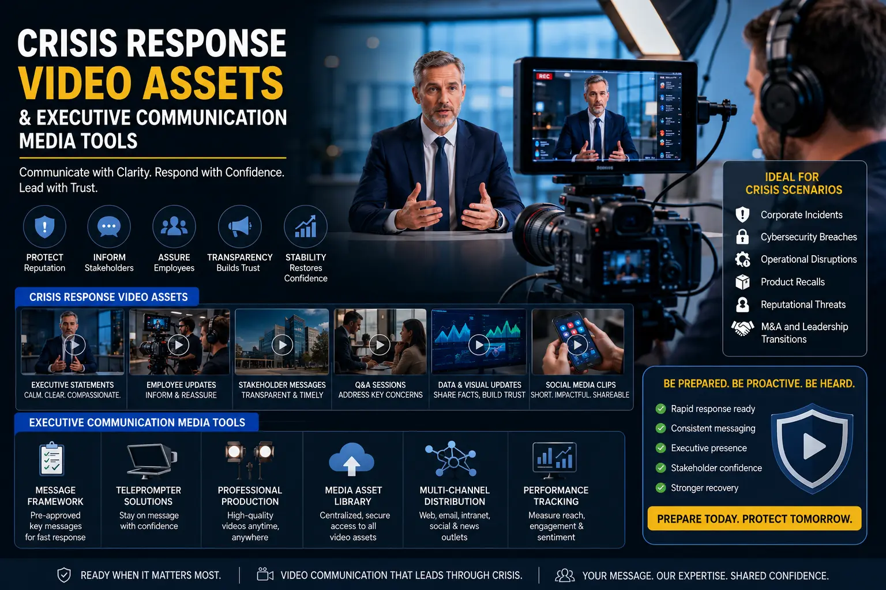
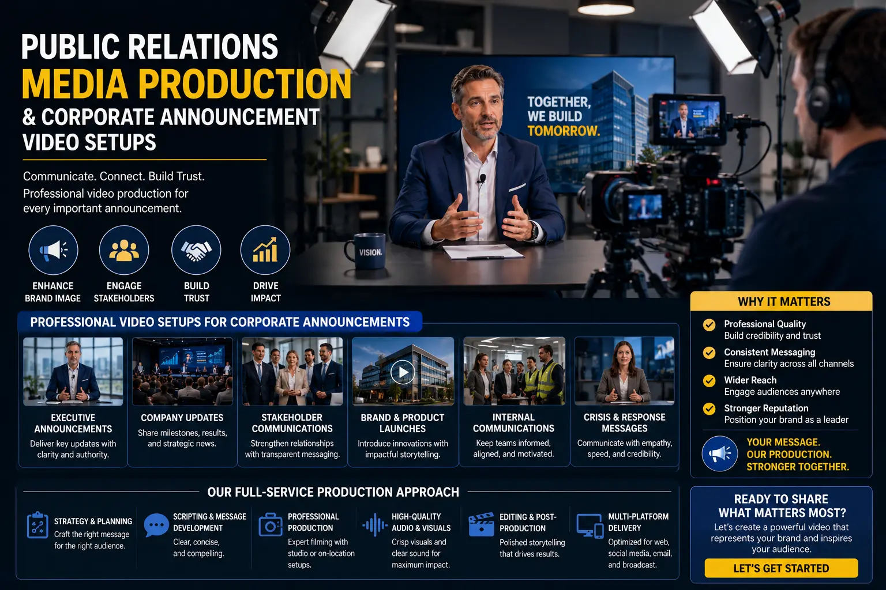

Rigorous Technical Workflows for Filming Executive Statements under Pressure
Why Executive Video Production Cannot Be Improvised
When a senior executive steps in front of a camera to deliver a corporate statement — whether addressing a product recall, a leadership transition, an earnings miss, or a public relations incident — the production quality of that video communicates as loudly as the words spoken. A poorly lit frame, an unsteady camera, ambient echo on the audio, or visible teleprompter hesitation will undermine the speaker's authority and the organisation's credibility regardless of how carefully the script was written.
This is the domain of Corporate Identity Videography applied under pressure — the discipline of producing executive-facing video content where the stakes are high, the timeline is compressed, and the margin for technical error is zero. Every element of the production — lighting, audio, framing, teleprompter configuration, background selection, and post-production colour grade — must be pre-planned, rehearsed, and executed with the precision of a live broadcast, because the resulting video will be scrutinised by investors, journalists, employees, and the public.
The organisations that handle these moments well are not those with the most charismatic executives — they are those with the most rigorous Crisis Response Video Assets production workflows already in place before the pressure arrives.
The Technical Foundation: Equipment and Environment
Building reliable Executive communication media tools starts with establishing a controlled filming environment and standardised equipment chain that can be deployed within hours when a statement is required:
- Dedicated filming location. Identify and pre-light a dedicated filming location within the corporate office — a boardroom, executive office, or purpose-built media room — that can be camera-ready within 30 minutes of a filming decision. The location should have controllable ambient light (blackout blinds or curtains), minimal ambient noise (away from HVAC units, open-plan areas, and external traffic), and a background that communicates institutional authority without distraction.
- Pre-configured camera and audio chain. Maintain a camera, lens, tripod, and audio setup that is permanently configured for the dedicated location. The camera should be set to the correct white balance, frame rate (24fps for cinematic authority or 30fps for broadcast clarity), and exposure for the room's lighting conditions. The audio chain should include a clip-on lavalier microphone with a wireless transmitter, backed up by a directional shotgun microphone mounted above the frame.
- Teleprompter system. Install a beam-splitter teleprompter mounted directly in front of the camera lens, allowing the speaker to read the script while maintaining direct eye contact with the viewer. The teleprompter software should support real-time speed adjustment by a dedicated operator, and the display should be calibrated so that the speaker's eye movement between lines is invisible to the camera.
- Backup recording system. Run a secondary camera or a clean feed recorder as a backup, capturing the same audio and a wider angle simultaneously. In high-stakes corporate filming, a single-point-of-failure recording chain is an unacceptable risk.
Controlled Lighting
Implementing soft key corporate lighting setups ensures the executive appears composed, well-lit, and authoritative — eliminating harsh shadows that suggest stress or fatigue.
Script Delivery Precision
Following strict teleprompter video execution rules allows the speaker to deliver complex messages with natural cadence while maintaining direct audience eye contact throughout the statement.
Rapid Deployment
Pre-configured corporate announcement video setups enable filming within hours of a decision, ensuring the organisation controls the narrative timeline rather than reacting to external pressure.
Narrative Structure
Building corporate transparency video arcs — acknowledgement, explanation, action, commitment — ensures the statement addresses audience concerns in a logical, trust-building sequence.

Lighting, Framing, and Audio: The Non-Negotiable Technical Standards
The visual and auditory quality of an executive statement video must meet broadcast-grade standards. These are not aesthetic preferences — they are the technical minimum required for the video to communicate authority and credibility:
- Soft key lighting at 30-to-45 degrees. Position the key light — a large, diffused LED panel or softbox — at a 30-to-45-degree angle from the speaker's face, slightly above eye level. This soft key corporate lighting setups approach produces even illumination across the face, reducing under-eye shadows and forehead glare while maintaining enough directional contrast to preserve a natural, three-dimensional appearance. Add a fill light at reduced intensity on the opposite side to lift shadow density without flattening the image. A hair light or rim light from behind separates the speaker from the background, adding visual depth.
- Camera height at speaker's eye level. Position the camera lens at the exact height of the speaker's eyes when seated or standing. A camera positioned below eye level creates an unflattering upward angle that distorts facial proportions. A camera positioned above eye level creates a diminishing perspective that reduces the speaker's visual authority. Eye-level framing communicates equality and directness — the visual language of honest, peer-to-peer communication.
- Medium close-up framing with headroom. Frame the speaker from mid-chest to just above the head, with minimal headroom. This framing is close enough to communicate personal directness and intimacy, but wide enough to include hand gestures and upper body language that reinforce verbal emphasis. Avoid extreme close-ups that feel invasive or wide shots that create emotional distance.
- Clean, isolated audio with room treatment. The speaker's voice must be captured cleanly, without room echo, background hum, or competing ambient sound. Use acoustic panels or portable sound blankets to dampen room reflections. Set the lavalier microphone gain so that the speaker's normal conversational volume peaks at -12dB, leaving headroom for emphatic passages without clipping. Monitor audio through headphones during the entire recording session.
The Teleprompter Workflow: Turning Scripts into Natural Delivery
The teleprompter is the most critical — and most frequently mismanaged — element of executive video production. Poorly configured teleprompter setups produce the stilted, visibly-reading delivery that immediately signals to the audience that the speaker is performing rather than communicating. Rigorous teleprompter video execution rules transform the teleprompter from a reading device into a delivery enhancement tool:
- Format the script for spoken delivery, not written reading. Break sentences into short, natural breathing phrases of 8-12 words per line. Use large, sans-serif fonts at 48pt or above. Highlight key emphasis words in bold. Remove all punctuation that does not correspond to a spoken pause.
- Set scroll speed 10-15% below the speaker's natural pace. The teleprompter should follow the speaker, not lead them. A scroll speed that is slightly slower than natural reading pace gives the speaker control over pacing, allowing them to pause for emphasis, slow down for complex points, and speed up through transitional phrases.
- Assign a dedicated teleprompter operator. The operator adjusts scroll speed in real time, watching the speaker's delivery rhythm and matching the text flow to their natural cadence. Automated scroll at a fixed speed forces the speaker to match the machine — producing the robotic delivery that undermines credibility.
- Rehearse the full script twice before recording. The first rehearsal identifies phrasing that sounds unnatural when spoken aloud. The second rehearsal establishes the speaker's rhythm and allows the teleprompter operator to calibrate their speed adjustments. Recording without rehearsal is a production error, not a time-saving decision.
The Narrative Arc: Structuring the Statement for Trust
Beyond technical execution, the statement itself must follow a structured narrative arc that addresses the audience's concerns in a logical, trust-building sequence. Effective corporate transparency video arcs follow a four-stage structure:
Stage 1: Acknowledgement
- Open by directly acknowledging the situation — do not begin with greetings, corporate boilerplate, or deflective context.
- Use specific, factual language: name the event, the date, and the stakeholders affected.
- Demonstrate awareness of the audience's concern — show that the organisation understands the impact.
- This stage should occupy no more than 15-20% of the total statement length.
Stage 2: Explanation
- Provide a clear, factual explanation of what happened and, where known, why it happened.
- Avoid technical jargon that obscures meaning — speak in language the broadest audience segment can understand.
- If the full explanation is not yet available, state what is known and commit to providing updates.
- Do not assign blame to individuals or external parties — focus on systems, processes, and circumstances.
Stage 3: Action and Commitment
- Outline the specific actions the organisation is taking — use concrete, verifiable commitments rather than abstract assurances.
- Identify who is responsible for each action and the timeline for completion.
- If remediation is already underway, describe its current status and expected outcomes.
- Close with a forward-looking commitment that positions the organisation as proactive and accountable.
Public Relations Media Production: The Distribution Workflow
Once the executive statement is filmed, edited, and approved, the public relations media production workflow determines how effectively the video reaches its intended audiences. The distribution plan should be prepared in parallel with the filming, not after:
- Export multiple format versions. Produce a full-length version for the corporate website and YouTube, a 60-second summary cut for LinkedIn and X (Twitter), a vertical 9:16 version for Instagram Stories and WhatsApp distribution, and a still-frame thumbnail with a pull quote for email and press distribution.
- Prepare accompanying written assets. Draft a press release, a stakeholder email, and social media copy that align with the video's narrative arc. All written assets should use the same language and framing as the video statement to maintain message consistency across channels.
- Coordinate simultaneous multi-channel release. Release the video across all channels within a 30-minute window to prevent fragmented media coverage and ensure the organisation's statement is the primary source before third-party commentary shapes the narrative.
- Monitor and prepare follow-up content. Assign a media monitoring team to track audience response across social channels and press coverage. Prepare a follow-up video template — using the same lighting, framing, and location — that can be filmed within 24 hours if audience response requires additional clarification or commitments.

Building a Standing Corporate Announcement Capability
The most effective approach to executive statement production is not to build the capability when a crisis arrives — it is to build a standing corporate announcement video setups infrastructure that is permanently ready. This means maintaining pre-lit filming locations, pre-configured equipment chains, trained teleprompter operators, and rehearsed narrative arc templates that can be activated within hours.
By investing in Executive communication media tools as permanent organisational infrastructure rather than ad-hoc project expenses, companies ensure that when the pressure arrives, the production quality is already solved — and the only remaining task is crafting the message itself.
Conclusion
Filming executive statements under pressure is a discipline that demands rigorous technical preparation, not improvisation. Corporate Identity Videography applied to crisis communications requires pre-configured lighting, framing, and audio chains; rehearsed teleprompter workflows; structured corporate transparency video arcs; and coordinated public relations media production distribution plans.
The organisations that communicate most effectively under pressure are those that invested in Crisis Response Video Assets production infrastructure before the pressure arrived — building standing corporate announcement video setups, training their executives with teleprompter video execution rules, and maintaining broadcast-grade soft key corporate lighting setups that can be activated in hours, not days.
At The PhD Ads, we build corporate statement filming infrastructure for Indian enterprises — Executive communication media tools, standing studio configurations, and crisis-ready production workflows that ensure every executive video communicates authority, transparency, and control.
Key Topics
Build Your Corporate Statement Filming Infrastructure
At The PhD Ads, we design and install standing executive filming environments — pre-lit studios, teleprompter systems, and crisis-ready production workflows — for Indian enterprises that need broadcast-grade corporate communications on demand.
Email: team@e2o.in